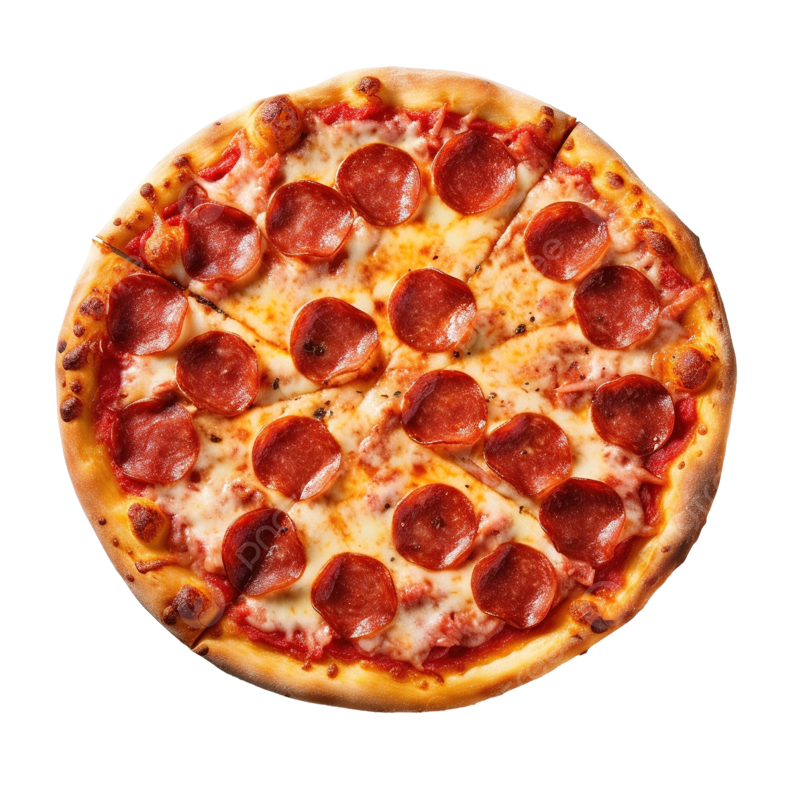

Pepperoni Pizza Recipe
Introduction
My recipe is on pepperoni pizza, a simple, delicious and easy to make pizza that is well known around the world. This is one of my favorite foods that I like to have at least once a week or every two weeks, pepperoni pizza is my favorite type of pizza as I find this pizza the tastiest and it is quick and easy to make.

Ingredients
Pizza Sauce
- ½ cup of water
- ½ can of tomato paste
- 1 teaspoon dried oregano, crushed
- ½ teaspoon garlic powder
- ½ teaspoon onion powder
- ½ teaspoon sugar
- ½ teaspoon salt
- ¼ teaspoon black pepper
Pizza Crust
- 3 ¼ cups all-purpose flour
- 2 (.25 ounce) envelopes pizza crust yeast
- 1 table spoon sugar
- 1 ½ teaspoons salt
- 1 ⅓ cups very warm water (120°F to 130°F)
- ⅓ cup oil
Toppings
- 1 cup shredded mozzarella cheese
- 1 (6 ounce) package Pepperoni
Steps
- Preheat the oven to 425°F (220°C). Grease two 12-inch pizza pans.
- Make sauce: Whisk together water, tomato paste, oregano, basil, garlic powder, onion powder, sugar, salt, and pepper in a medium bowl until smooth. Set aside.
- Make crust: Combine 2 cups flour, yeast, sugar, and salt in a large bowl. Add warm water and oil; mix until well blended, about 1 minute. Gradually add remaining flour, a little at a time, until a soft, sticky dough forms.
- Transfer dough to a floured surface; knead until dough is smooth and elastic, about 4 minutes. Add more flour as needed.
- Divide dough in half. Lightly flour your hands, then pat each piece of dough onto the prepared pizza pans.
- Top dough with sauce, cheese, and pepperoni.
- Bake in the preheated oven until crusts are browned and cheese is bubbly, 18 to 20 minutes. Rotate pizza pans between the top and bottom oven racks halfway through baking.